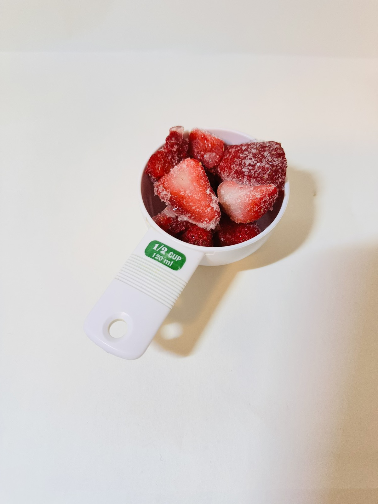
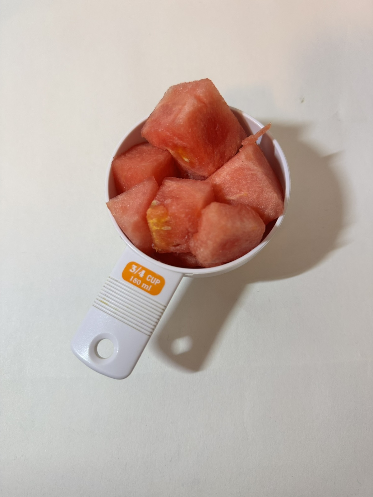

Strawberry Sunrise
Serves 2
This is a refershing, lightly sparkling drink, perfect for summer and those special occasions where a fruity drink is all you could want!
Ingredients
-
120g Strawberries
-
200ml Hot water
-
1tsp Honey or Sugar
-
180g Watermelon
-
200ml Soda Water or Sprite
Steps
-
First, put your strawberries into a heat-safe container, then add your hot water.

-
Then add 1tsp of honey or sugar to the strawberry and water mixture.

-
Blend or Juice your watermelon cubes.


-
Strain both mixtures.
-
Then combine the mixtures.
-
Lastly, add soda water or sprite then serve.